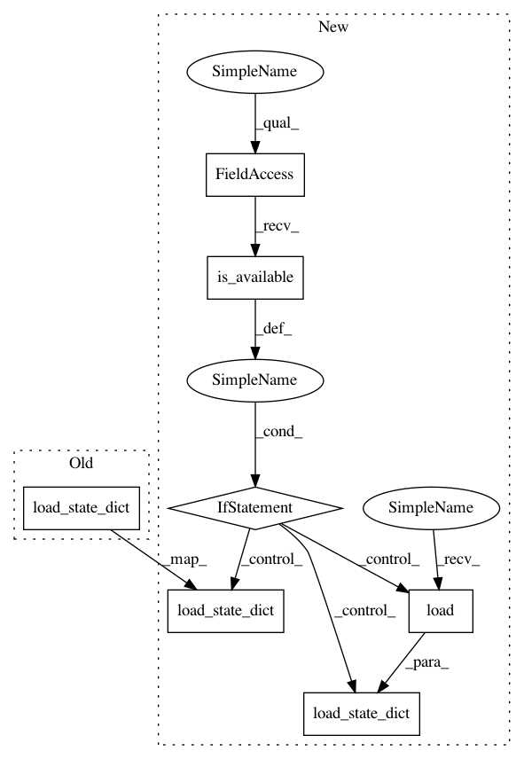

4a6cb19fc21993fe0505f3962da6bdfa94de4a0a,cube/models/vocoder.py,BeeCoder,load,#BeeCoder#,85
Before Change
x = 0
def load(self, output_base):
self.network.load_state_dict(torch.load(output_base + ".network"))
self.network.to(device)
// self.model.populate(output_base + ".network")
def _predict_one(self, mgc, noise):
After Change
x = 0
def load(self, output_base):
if torch.cuda.is_available():
self.network.load_state_dict(torch.load(output_base + ".network"))
else:
self.network.load_state_dict(
torch.load(output_base + ".network", map_location=lambda storage, loc: storage))
self.network.to(device)
// self.model.populate(output_base + ".network")
def _predict_one(self, mgc, noise):
In pattern: SUPERPATTERN
Frequency: 3
Non-data size: 7
Instances
Project Name: tiberiu44/TTS-Cube
Commit Name: 4a6cb19fc21993fe0505f3962da6bdfa94de4a0a
Time: 2018-11-10
Author: tibi@racai.ro
File Name: cube/models/vocoder.py
Class Name: BeeCoder
Method Name: load
Project Name: richzhang/colorization-pytorch
Commit Name: e2b72f5da0a45f9bc81fd7f926a1a6205bb3b182
Time: 2018-04-24
Author: junyanzhu89@gmail.com
File Name: models/base_model.py
Class Name: BaseModel
Method Name: load_networks